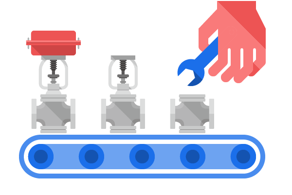

秉持專業
秉持高品質服務，從購入原料到製作層層把關，只為給客戶最優質的產品。
快速交貨
憑著幾十年經驗，生產快而不失品質，交貨快速，絕不浪費客戶寶貴的時間。
客戶滿意推薦
協瑋實業有限公司一路走來，獲得無數客戶讚賞，為協瑋最大的驕傲。
自動控制閥專業設計製造
許秋明與黃馨慧夫婦從1981年創立協瑋至今，經歷許多風雨，始終秉持一貫嚴謹精湛的製造工法，協瑋閥門一直具有優良品質，以及高度的靈活性、可靠性與安全性。我們可以提供多種不同型號的產品，滿足您個性化的閥門系統解決方案需求，歡迎直接洽詢。


協瑋聯絡資訊
- 新北市蘆洲區永安南路一段162-2號
- shie.way@msa.hinet.net
- (02)82823306 黃小姐
- (02)22887850
- @764toufp 立即加入協瑋line帳號，產品詢問好方便！
-

關於協瑋
協瑋在自動控制閥的製造領域中處於領先水平。從1981年建立以來，先後為多家國內外知名化工企業提供閥門裝置，管路設計，自控系統測試，深受各大企業的青睞。